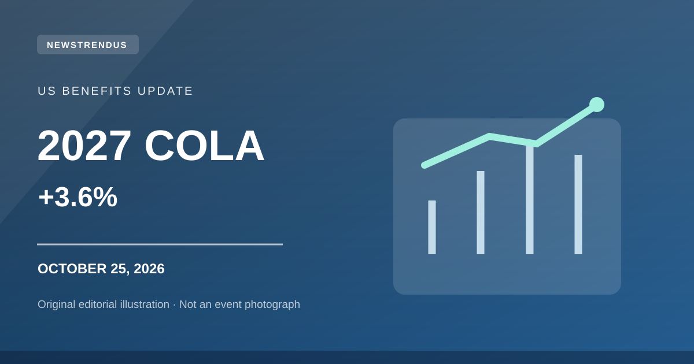

2027 Social Security COLA Is 3.6%: Payment Dates and What Changes
The Social Security Administration confirmed a 3.6% adjustment for 2027. Here is the practical timeline for benefits, notices and taxable earnings.

Original NewsTrendus artwork — for editorial illustration only, not a news-event photograph.
WASHINGTON — Social Security benefits and Supplemental Security Income payments will rise 3.6% in 2027, according to an announcement the Social Security Administration made on October 14, 2026. The change affects about 76 million Americans across the programs, although some people receive both. The announcement is not new today; the topic remains useful because people are searching for their updated 2027 payment amounts and dates.
When does the 2027 Social Security increase begin?
Most Social Security beneficiaries will see the 3.6% cost-of-living adjustment in benefit payments received in January 2027. SSI recipients will see the increased amount with the December 31, 2026 payment, because of the program's payment calendar. The two dates are easy to confuse, and the distinction matters to households planning monthly budgets.
The SSA says nearly 72 million Social Security beneficiaries are covered by the adjustment, while about 7.3 million people receive SSI. Those figures describe overlapping program populations, not two groups that should simply be added together.
How much will the increase be in dollars?
The SSA estimates that the average Social Security retirement benefit will rise by approximately $75 per month. That is an average, not a universal increase. Someone with a different starting benefit will receive a different dollar increase, and deductions such as Medicare premiums can affect the amount ultimately deposited.
A rough estimate for any current benefit is to multiply it by 1.036, then account for relevant deductions. For example, $1,500 before deductions would become approximately $1,554 before any changed deductions. The personalized SSA notice is the authoritative figure for a particular recipient.
How to find your official 2027 COLA notice
The agency says people who have qualifying personal my Social Security accounts and enroll in paperless notices can see their COLA information in the online Message Center starting in late November. Those who have not enrolled in paperless communications should receive mailed notices during December.
SSA's guidance says November 18 is the deadline for creating an account and enrolling in paperless notices to obtain early online access. Avoid unofficial websites asking for payment to reveal a COLA amount; access to SSA's own account tools is free.
Other 2027 changes beyond the monthly check
The maximum wages subject to Social Security payroll tax are scheduled to increase from $184,500 in 2026 to $192,300 in 2027. The earnings test limits for recipients who work while collecting benefits also change, so workers should check the current SSA fact sheet rather than applying the COLA percentage to every rule.
The annual adjustment is tied to the Consumer Price Index for Urban Wage Earners and Clerical Workers, known as CPI-W. A cost-of-living increase is intended to reflect measured inflation, not to guarantee that every recipient's purchasing power will improve by the same amount.
What readers should do now
Check the official SSA 2027 COLA fact sheet and your own benefit notice. Anyone making budget choices should distinguish gross benefit amounts from the net payment actually received. For Medicare-related deductions, verify the updated premium information when it becomes available through official Medicare or SSA channels.
This article explains the confirmed October 14 announcement and does not pretend that the percentage was announced anew on October 25. Social Security rules can be personal, so rely on official SSA notices for your exact figures.
Frequently asked questions
What is the 2027 Social Security COLA percentage?
The official 2027 COLA is 3.6%.
When will the 2027 Social Security raise arrive?
Most Social Security benefits increase with the January 2027 payment. SSI increases begin with the December 31, 2026 payment.
Will everyone get exactly $75 more?
No. About $75 is the SSA's estimated average monthly retirement benefit increase; individual amounts vary.
Sources and verification
This NewsTrendus article offers independently written context based on the linked reporting and official records. Original reporting and game statistics remain credited to their publishers.
Google Trends indicates search interest, not the accuracy of a report. Facts have been checked against the sources above. Corrections can be requested through our editorial contact page.